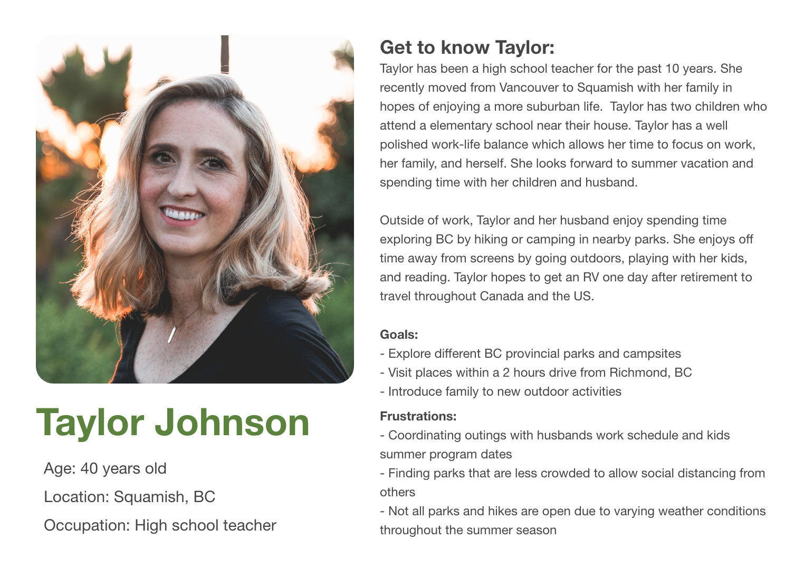
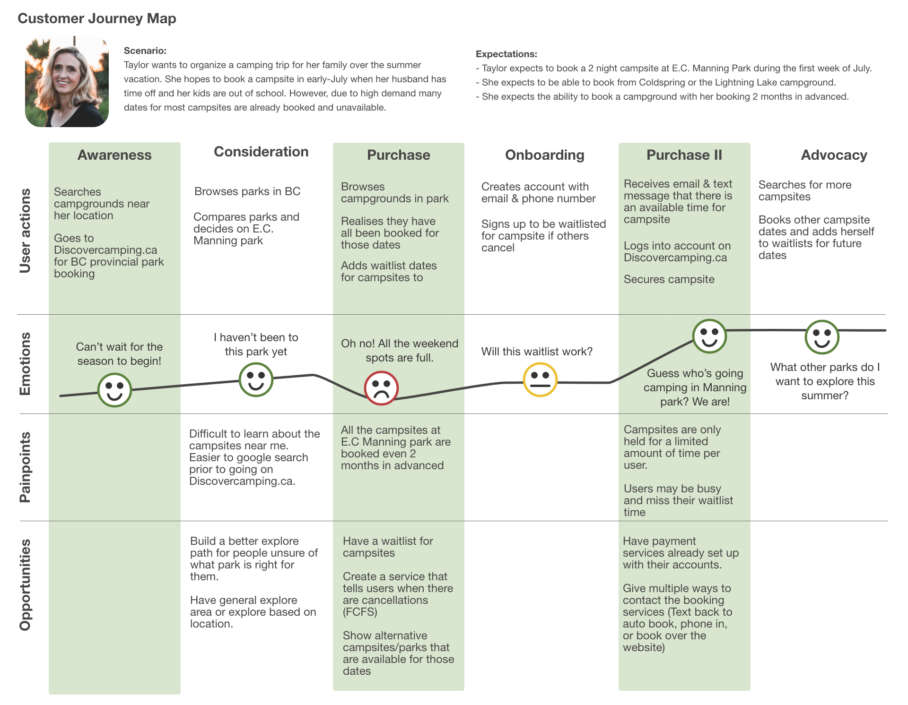
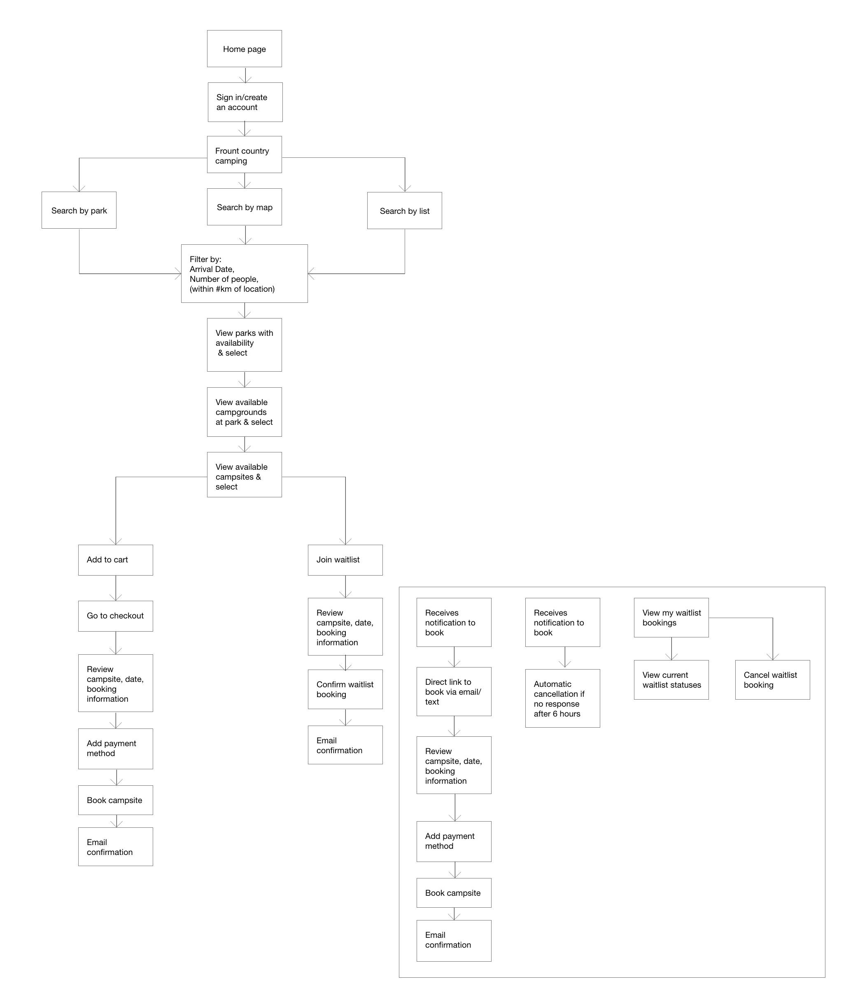
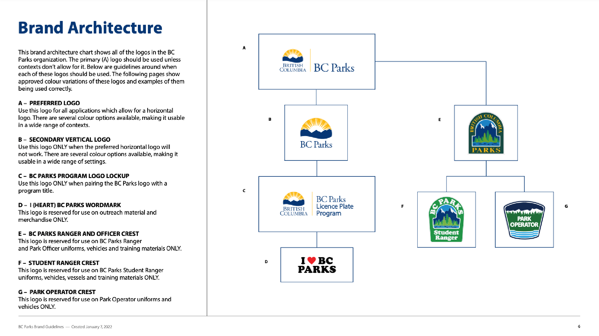
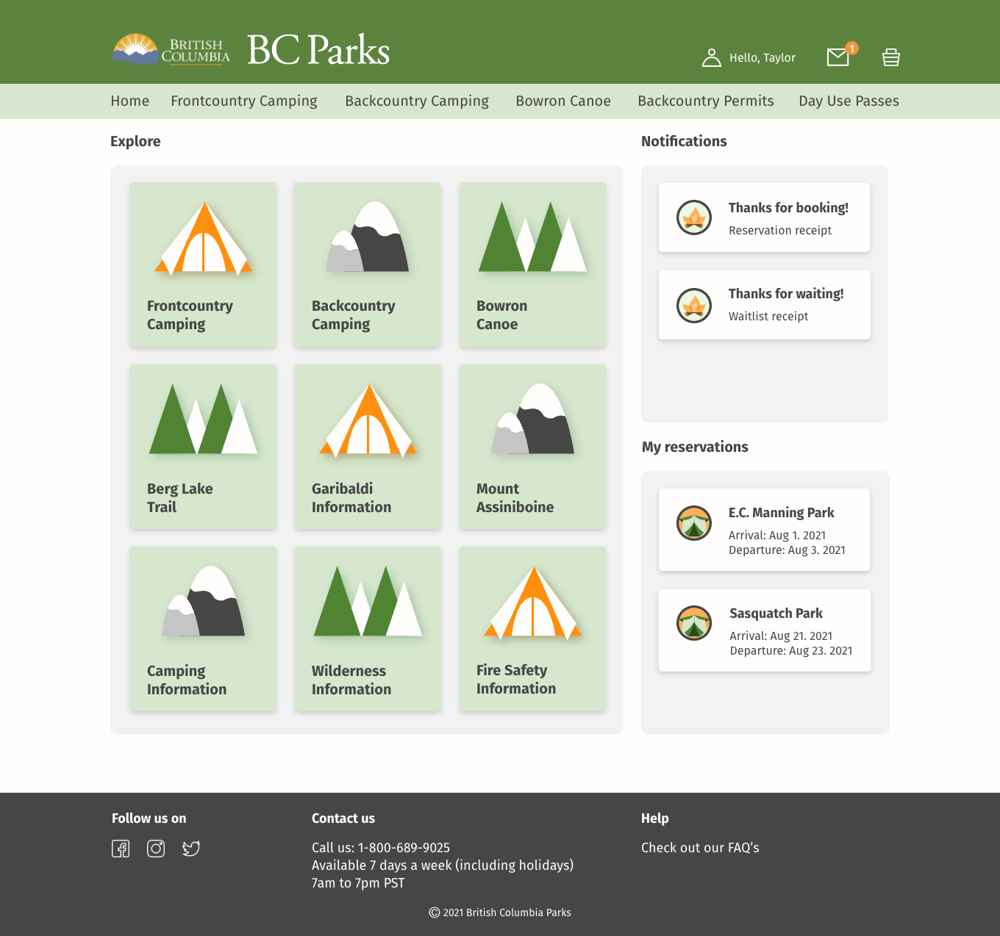

Disclaimer: This was a personal project. I was not commissioned by BC Parks to redesign their website and have no affiliations with BC Parks.
What is Discover Camping?
Discover Camping is a campsite booking website for British Columbia Parks run by BC Parks. It allows users to book spots in front-country and back-country campgrounds as well as provides information about the different parks throughout BC.
Why did I choose Discover Camping?
I love camping and I love exploring BC and wanted to find a way to help others explore as well. Because of the increase in restrictions on international travel in 2021 due to the COVID-19 pandemic, many people turned towards exploring the wondrous backyard British Columbia has to offer thereby causing a surge in demand for campsites. Since there was such a high demand for campsites, booking a campsite felt more stressful than booking my university courses. Why is the process so stressful when camping is supposed to be relaxing?
What did I do for this case study?
In this project, I wanted to focus on 3 main goals:
The problem statement that I created for this project was:
How might campers secure a campsite efficiently, find one that matches their needs, or fairly obtain a campsite that had been given up?
I created a survey to learn a little about Discover Camping’s audience and to see their compliments and complaints about the website. I sent a Google survey to two Facebook groups: BC RV, Camping and Boating Enthusiasts (19k members), and Camping in British Columbia (74k members).
I was super ecstatic to receive just over 50 responses after leaving it open for 24 hours in both groups :D
My takeaways from the survey:
Currently www.Campnab.com provides a service that scans campsites for openings for their customers based on the users desired campsite, date, and length in stay and texts them when there are openings.
Their solution: The current product gives notifications when the users desired campsite becomes available.
The problem: When users receive a notification via text message, the campsite is not reserved meaning others can still book that site in the meantime. This leads to a false sense of hope if another camper swoops in on the campsite. Additionally, the users do not know if they are the only ones being sent the text notification or if hundreds of others are receiving the same text as well.
From the research, I was able to gauge roughly who my audience was and came up with the persona Taylor Johnson.
In this customer journey map, it includes Taylors thoughts and actions as she attempts to find a park to camp in, joins the waitlist and finally books the campsite. From this journey map, I was able to visualize how a customer might go through the website.
With these features in mind, I created a map of the website including the different views users can take to book a campsite, add themselves to a waitlist, and book a campsite via the waitlist system.


With the website, I wanted to see what the website would look like with a fresh look and remodeled it after retro camping posters. Incidentally, this colour palette is similar BC Parks Rangers and Officer crest.
As indicated by the research, the majority of people going camping use RV’s or Van camping. One of their concerns aside from securing a campsite was ensuring that the site was large enough or fit their needs in parking their camper van. By adding additional pictures of the campsite, and showing the site image prior to booking, this would ensure that the correct site is booked for the users needs.
From the survey, 48% of the participants indicated it was very difficult to navigate the site and just wanted to see what was available based on their dates imputed. From first glance, the site appears to only let users search if they input a park name, date, and stay length. However, this is deceptive as searches can be conducted without a park name inputted.

One participant stated that they would need to refresh the site every time to go back to the beginning to restart their search. This is and was very stressful to the user since every minute spent searching meant that there were less and less spots available.
In order to make this more clear, I designed the layout of searching so that users conduct searches based on their available dates and can search for a specific park via map view, list, or calendar view. This allows the users to view not only the specific park they are searching for but also see what else is available at that time.
As an added bonus, notifcations and mail were added to the home page. This saves the users the extra clicks of finding the menu under my account and then navigating to mail. Adding the notifications and mail gives users a snapshot of any updates such as a cancellation or a booking confirmation.
One lesson that stood out to me was the need for transparency when sending out a research survey no matter how innocent it seems to the researcher. To the researcher, it may seem like a great way to understand the audience demographic however in the surveyors eyes, it can seem like a breach in information. Therefore, in future surveys and any research endeavors, I will definitely be sure to highlight my disclaimers at both the beginning and end of the survey with a stressor that the participant's information will be kept safe and anonymous.
Another lesson I learned was about scope. I think when I began this project, I was so excited by the feedback received from the survey and wanted to create solutions to all the problems listed. However, as I plunged into the project I realized that I was way over my head and needed to cut back due to time constraints. Therefore, in my future projects, I think something that would help would be to either cut down the solutions into mini case studies, prioritize the problems, and group similar problems together in order to be more efficient with my time and energy.
In future, I think it would be interesting to see what my website designs would look like with the Discover Camping and BC Parks design system. Because this was a personal project, I took the liberty to imagine it in a different light but seeing what it could tentatively look like in production would be an interesting endeavor.